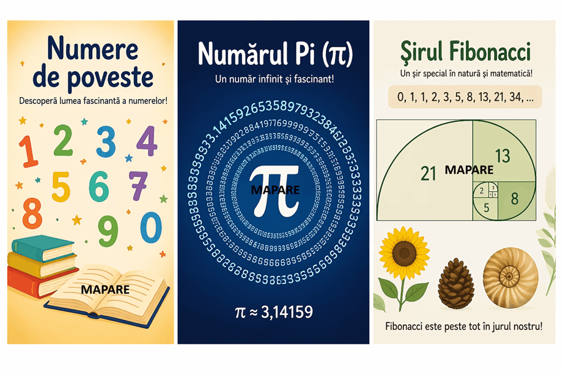
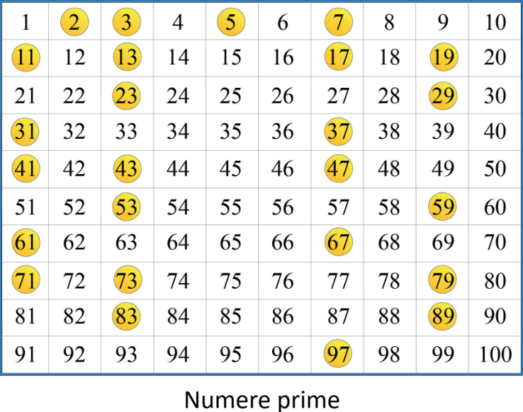

Despre...
Numerele de poveste ocupă un loc aparte în matematică, deoarece îmbină logica riguroasă cu frumusețea formelor și a tiparelor din natură. Numărul Pi, șirul lui Fibonacci și numerele prime sunt exemple celebre care apar în știință, artă și tehnologie, fiind studiate încă din antichitate. Descoperirea acestor numere transformă matematica într-o experiență interesantă și accesibilă, plină de conexiuni surprinzătoare.
Fibonacci

Numere prime

PI